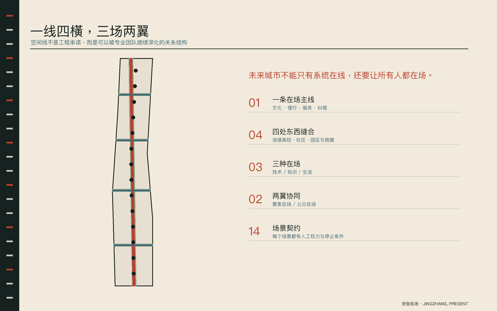
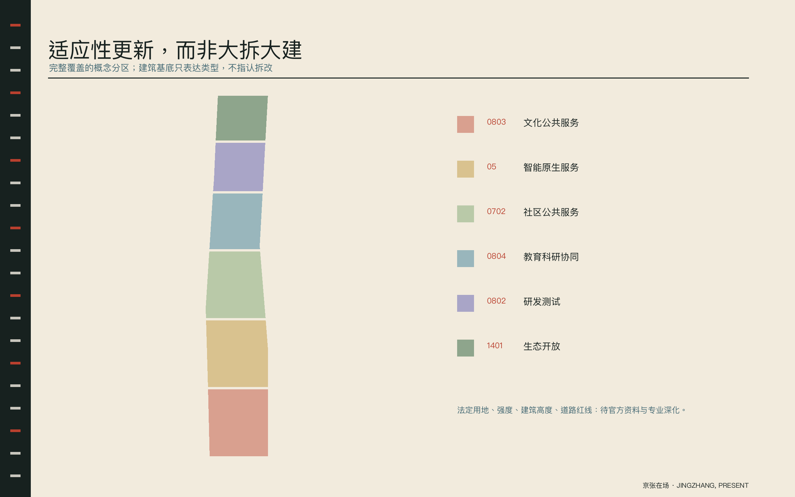
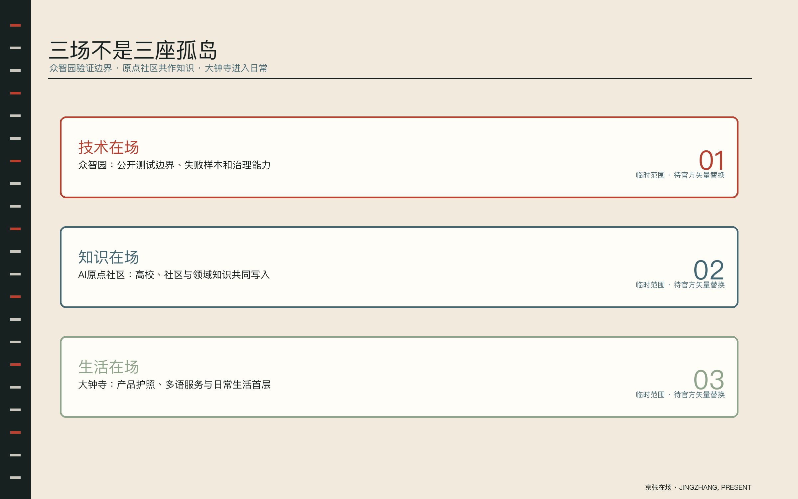
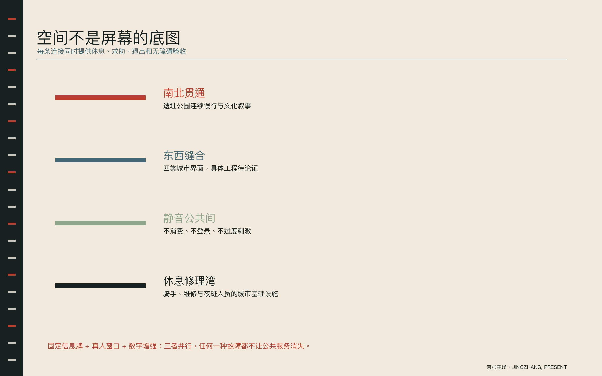
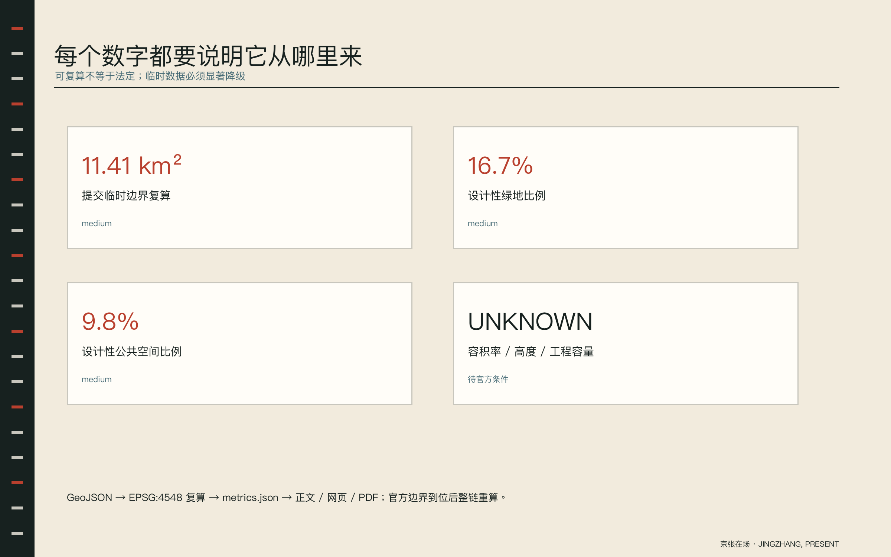
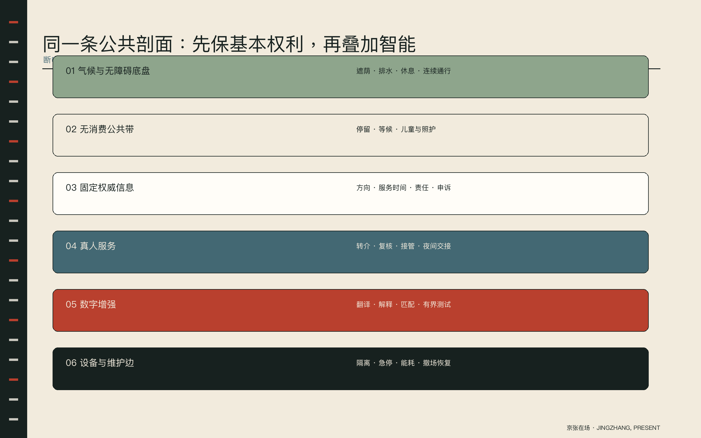
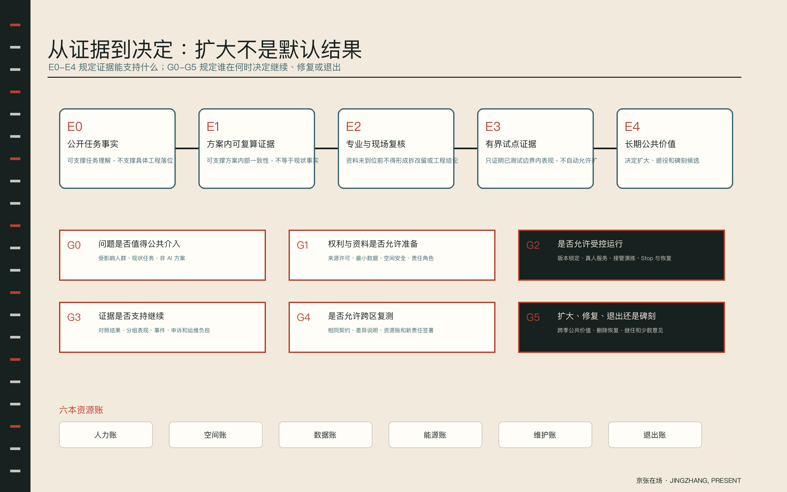

任务覆盖
六项 Agent 任务、三层范围、三区两翼、14 个场景与年度运营均有正文和图件证据。
CENTENNIAL JINGZHANG AI INNOVATION BELT
未来城市不能只有系统在线，还要让所有人都在场。
EVIDENCE OVERVIEW
重点区域、用地分区、建筑与更新项目、交通慢行、蓝绿公共空间和 AI 场景由同一组结构化数据与提案内容生成。







六项 Agent 任务、三层范围、三区两翼、14 个场景与年度运营均有正文和图件证据。
空间拓扑通过；临时边界显著降级；法定强度保持 unknown。
控规、道路、权属、文保、市政和实施主体待官方资料与专业确认。
THE PRESENCE CONTRACT
每个场景必须公开八个字段；缺少人工停止权、无 AI 退路或责任主体，就不能进入真实城市试点。
THREE GROUNDS · TWO WINGS
能力边界、失败样本、能耗与治理公开。
高校、社区与领域专家共同写入城市问题。
产品护照、多语服务与日常生活首层。
FOURTEEN ROLL CALLS
众智园｜专业人员批准测试，公众可一键退出
STOP出现未授权数据或不可解释安全事件
众智园｜安全员持物理急停并逐班签字
STOP连续两次越界或急停失效
众智园｜设施工程师确认切换
STOP热安全阈值异常
AI原点社区｜领域专家拥有发布与撤回权
STOP来源不明或许可冲突
全带｜残障使用者共同验收，运维人员销项
STOP建议路径与现场不符
全带｜窗口人员对最终答复负责
STOP政策版本未知
AI原点社区｜居民决定议题，教师审查方法
STOP把个人意见推断为群体画像
AI原点社区｜医护确认转诊与风险提示
STOP出现诊断性输出或高风险症状
AI原点社区｜教师/监护人选择和纠偏
STOP诱导依赖或收集无关未成年人数据
小月河翼｜骑手和收件人共同确认
STOP形成劳动者隐性考核
大钟寺｜商户签署，消费者可投诉复核
STOP未披露供应商或夸大能力
遗址公园｜史学顾问与讲述者保留修订权
STOP史料冲突未标注
大钟寺｜律师或公共法律服务人员复核
STOP生成确定性法律结论
全带｜交接双方逐项确认并可驳回
STOP将建议用于个人绩效监控
E0–E4 · G0–G5
九个行动包、六道公共决策门和六本资源账，把实施从口号变成可停止、可修复、可退出的证据流。
90-DAY PILOT
九类人群共同写契约与基线。
AI 与无 AI 服务并行。
失败样本先于宣传公开。
扩大范围必须重新评审。